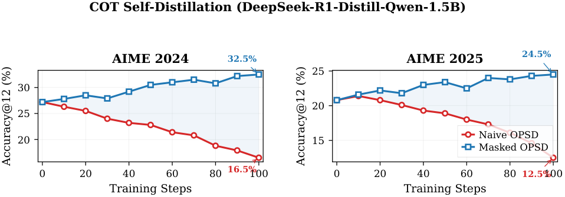
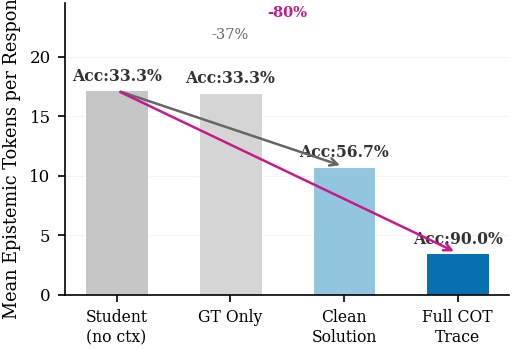
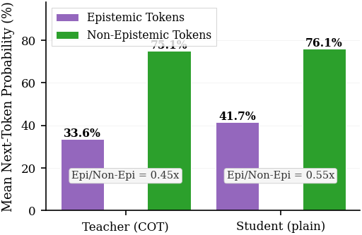

EMNLP 2026 — Paper Figures Gallery
Preserving Epistemic Uncertainty: Token-Level Masking Prevents Self-Distillation Degradation in Mathematical Reasoning
1. Main Result: AIME Training Curves (1.5B)
Figure 1 (fig:cot_aime) — AIME Accuracy Over Training Steps
COT Self-Distillation, DeepSeek-R1-Distill-Qwen-1.5B, 100 steps

📄 PDF (vector)
Figure S1 — AIME Accuracy Over Training Steps (7B)
COT Self-Distillation, DeepSeek-R1-Distill-Qwen-7B, 100 steps
📄 PDF (vector)
(7B PNG preview not shown — see PDF)
2. Full Dynamics: 4-Panel Combined View (1.5B)
3. Diagnostic: Reference Context Probe
Figure 3 — Epistemic Token Frequency Across Prompt Conditions
30 problems × 3 samples, DeepSeek-R1-Distill-Qwen-1.5B

📄 PDF (vector)
4. Diagnostic: Token-Level Probability Probe
Figure 4 — Teacher vs. Student Next-Token Probability

📄 PDF (vector)
5. Summary: Delta Comparison
All PDF Files
Generated: 2026-05-16 |
Script: recipe/RLSD/figures/generate_figures.py